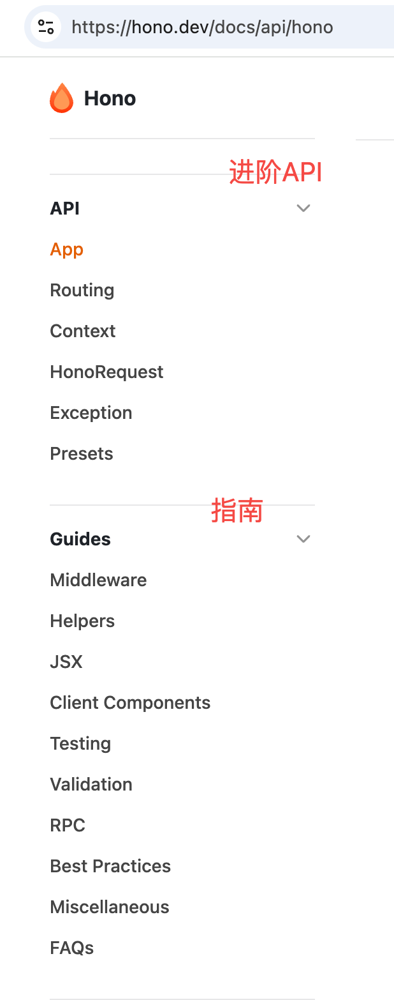
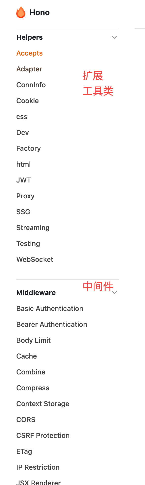

Hono框架
Hono是一个轻量级、快速的Web框架，它支持TypeScript，可以运行在多个JavaScript运行时环境中(Node.js、Deno、Bun等)。让我们从零开始学习Hono。
hono的一些解读
- 中间件和koa一模一样，dispatch都是抄来的。
- 它的路由性能很好，官方说它比find-my-way更高效。
- 它的client，和trpc/httpc一个味道
- context上的方法我还是挺喜欢的
类型不错，入门好。源码里使用了vitest，np是有品的。tsc，中规中矩。这里面最难的，是如何抹平那么多runtime的差异，这部分设计的还是可圈可点的。
1、Hono不是为node设计的，但有适配器，问题不大 2、Who is using Hono? 基本都是faas & workder相关的 3、使用的是Web 标准，api会有差异 4、中间件 基本都有，官方18个左右
性能不错的。生态可能偏初期，趟坑要有准备。10k star，非常活跃，api极简。大家能接受自己定制即可选用。
无论如何，对于学习ts和nodejs来说，它都是一个不错的选择。
使用Cursor初始化项目

要初始化一个 Hono.js 的最新项目，你可以按照以下步骤进行：
- 确保你已经安装了 Node.js：你可以在终端中运行 node -v 和 npm -v 来检查是否已安装。
- 创建一个新的项目目录：
$ mkdir my-hono-project
$ cd my-hono-project
- 初始化 npm 项目：
$ npm init -y
- 安装 Hono.js：
$ npm install hono
创建一个基本的服务器文件：在项目根目录下创建一个 index.js 文件，并添加以下代码：
const { Hono } = require('hono')
const app = new Hono()
app.get('/', (c) => c.text('Hello Hono!'))
运行你的 Hono.js 服务器：
node index.js
- 访问你的应用：在浏览器中打开 http://localhost:3000，你应该能看到 "Hello Hono!" 的消息。
这样，你就成功初始化了一个 Hono.js 项目！
这个简单的例子展示了Hono的基本用法：
- 导入Hono类
- 创建应用实例
- 定义路由处理器
- 导出应用
这是最常规的做法。
更好一点的做法
$ npm create hono@latest

输入自定义选项

至此，我们就创建成功了。

如何阅读文档
入门

- Concepts部分是基础概念，比如什么是Hono，什么是路由，什么是中间件，什么是钩子函数，什么是上下文对象等。
- Getting Started部分是入门指南，比如如何安装Hono，如何创建一个应用，如何定义路由，如何使用中间件，如何使用钩子函数，如何使用上下文对象等。
- basic必须会，里面有最基础的用法，req和res，以及各种常用api，还有中间件，适配器。
- Hono支持多种Runtime，本节课我们使用Node.js，所以Node.js部分必须会，基本上就是如何运行，调试，docker部署等。
进阶

- API部分是API参考，比如Hono的类，Hono的实例方法，Hono的静态方法，Hono的上下文对象等。
- 这部分就比较具体，各种内置对象的API。
- Guides部分是指南，比如如何使用Hono，如何使用Hono的中间件，如何使用Hono的钩子函数，如何使用Hono的上下文对象等。这部分其实是大杂烩，Web应用开发周边用到的内容基本都写了。
- 中间件Middleware是最重要的概念，如果不懂中间件，就别想开发了。如果熟悉koa嚯express，这部分很容易理解。
- jsx，就差把React教程搬过来了，当然都是点到为止，不会深入。
- test测试，这部分是因为它实现了 Hono Client，所以可以像supertest一样进行api测试。
- validator，最简单的就是中间件方式，更好的方式zod，它基本上是ts必备库。
- RPC，本意是远程方法调用，一般是基于tcp写一个。这里的RPC借鉴了概念，但它本质就是基于http协议和ts类型而实现的client SDK。
- 其他看看就好。
整体上看，这份文档写的还是比较清晰的。
使用扩展
Helper和Middleware这些都是业务开发中常用的功能，所以这部分内容是必须掌握的。每个方法都建议自己动手写一遍。

其实，koa、express、fastify等，基本上也都这个思路，中间件也只是写法上有差异。
这里面以中间件为最核心。你对架构的理解，取决于你对中间件了解多少，你对代码的抽象，也取决于你对中间件的理解。 相信这么说，大家就能理解它的重要性了。
中间件里像cors跨域、日志、限流、api鉴权都是非常常见的。这里举个例子
const app = new Hono()
// CORS should be called before the route
app.use('/api/*', cors())
写法就这么简单，至于跨域是什么，如何模拟是需要大家额外掌握的。
对LLM友好
它提供了合并的文档，Doc list、FUll Doc、tiny Doc，可以满足不同场景。一般我们把这个地址丢给大模型，让它学习就好了。这点做的非常棒。
示例
例子代码都还不错，每个例子都建议自己动手写一遍。然后反差前面的api，很快就可以很熟练了。

总结
- 入门：基础概念，基础用法，基础API。
- 进阶：中间件，钩子函数，上下文对象，适配器，路由，测试，验证器，RPC等。
- 使用扩展：Helper，Middleware，jsx，test，validator，RPC等。